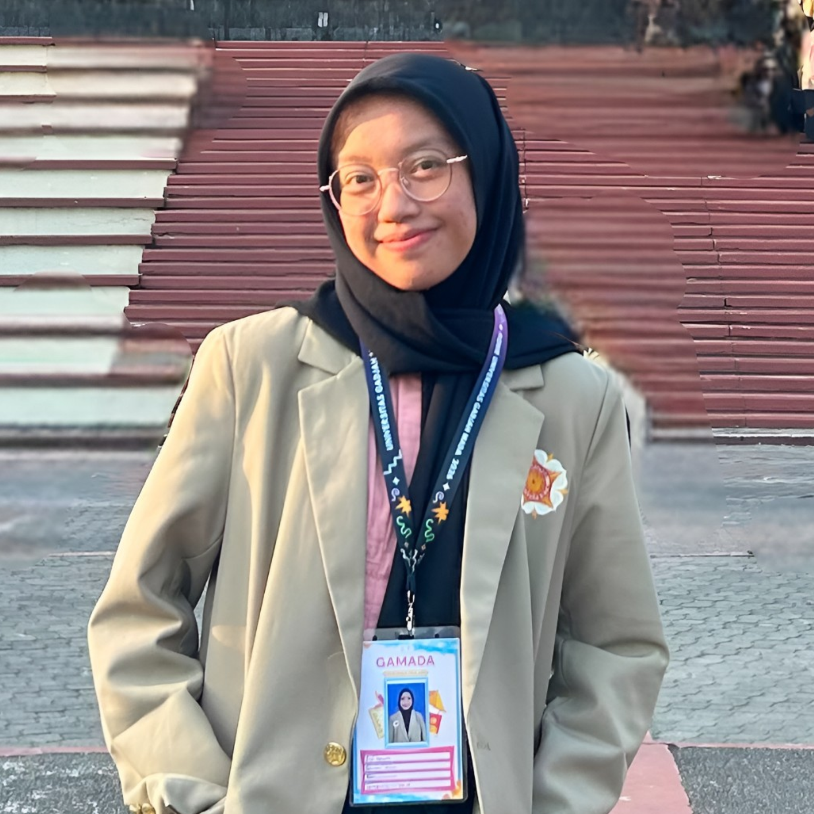

Universitas Gadjah Mada
D4 Teknologi Rekayasa Elektro
Departemen Teknik Elektro dan Informatika, Sekolah Vokasi.
- Diterima melalui jalur CBT Universitas Gadjah Mada.
- Rata-rata skor UTBK: 657,99.
Profil · Yogyakarta, Indonesia
Mahasiswa Teknologi Rekayasa Elektro UGM yang tertarik pada sains, kelistrikan, dan pengembangan energi terbarukan Indonesia

Perkenalan
Saya sedang menempuh pendidikan D4 Teknologi Rekayasa Elektro di Universitas Gadjah Mada. Saya memiliki minat pada sains, kelistrikan, serta pengembangan energi terbarukan di Indonesia. Selama sekolah, saya aktif dalam organisasi, perlombaan, kegiatan kerelawanan, dan proyek yang melatih kepemimpinan, penulisan, serta kerja sama tim. Saat ini, saya terus mengembangkan pengetahuan dan keterampilan agar dapat berkontribusi dalam kemajuan bidang energi terbarukan dan menginspirasi generasi muda.
Latar Belakang
D4 Teknologi Rekayasa Elektro
Departemen Teknik Elektro dan Informatika, Sekolah Vokasi.
Sekolah Menengah Atas
Lulus dengan nilai rata-rata 91,21 dari 100 dan meraih peringkat empat besar selama enam semester.
Aktif mengikuti organisasi dan perlombaan.
Kemampuan
Kegiatan dan Karya
Anggota Divisi Acara · Yogyakarta
Relawan · Kabupaten Pekalongan
Mempelajari manfaat tanaman mangrove dan ikut melaksanakan penanaman mangrove di Ekowisata Mulyosari.
Kerelawanan Lingkungan · Kabupaten Pekalongan
Mengikuti kegiatan yang mencakup kebersihan area, pemilahan sampah, edukasi, dan pengelolaan sampah serta memperluas wawasan mengenai isu lingkungan global.
Proyek teknologi berbasis Arduino Uno
Merancang dan membuat alat pemutus listrik berbasis suara sebagai inovasi untuk membantu mengurangi penggunaan sumber daya alam tak terbarukan secara berlebihan.
Menentukan dan mewawancarai narasumber inspiratif, menyusun artikel, serta membantu penyuntingan video hasil wawancara.
Ketua Kelompok
Merancang ide dan pembuatan permainan tradisional Rangku Alu serta membuat infografis mengenai permainan tersebut.
Wakil Ketua Kelompok
Mengembangkan ide usaha olahan singkong bernama “Cassava’s Thompson”, termasuk perencanaan keuntungan dan kerugian serta desain produk dan kemasan.
Wakil Ketua Pelaksana
Merancang naskah, menentukan properti dan kostum, mengawasi persiapan hingga pelaksanaan acara, serta melatih anggota untuk pementasan drama musikal.
Ketua Kelompok
Membuat pupuk dari sampah daun kering menggunakan bahan alami yang tersedia serta merancang kemasan agar produk siap dipasarkan.
Menyusun cerita pendek dan artikel serta berperan sebagai reporter utama dan reporter lapangan dalam liputan berita.
Pencapaian
2023 · Tingkat Nasional
Festival dan Lomba Seni Siswa Nasional (FLS2N), diselenggarakan oleh Pusat Prestasi Nasional.
2023 · Kabupaten Pekalongan
Festival dan Lomba Seni Siswa Nasional (FLS2N), diselenggarakan oleh Dinas Pendidikan dan Kebudayaan Kabupaten Pekalongan.
2024 · Kabupaten Pekalongan
Festival dan Lomba Seni Siswa Nasional (FLS2N) tingkat kabupaten.
2024 · Kabupaten Pekalongan
Olimpiade Sains Nasional tingkat kabupaten yang diselenggarakan oleh Pusat Prestasi Nasional.
2023 · Tingkat Nasional
Bagian dari Apresiasi Guru dan Tenaga Kependidikan.
2023 · Kabupaten Pekalongan
Olimpiade Sains Nasional tingkat kabupaten yang diselenggarakan oleh Pusat Prestasi Nasional.
Januari – Juli 2026
Riwayat beasiswa dari Kitabisa dan Salam Setara, sesuai informasi dalam CV.
Sertifikasi Bahasa
Sertifikat Kemampuan Bahasa Indonesia dengan predikat Sangat Unggul.
Mari Terhubung